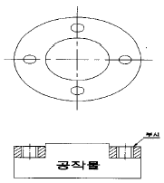
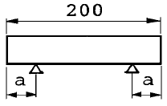
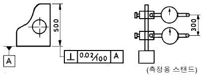
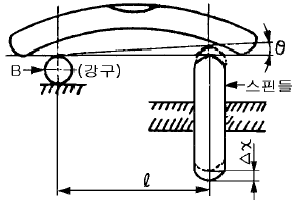

사출(프레스)금형산업기사 (2004-05-23 기출문제)
1과목: 금형설계
1. 표준게이트에서 성형품의 살두께는 2.5mm이고 수지상수가 0.8일 때 게이트 두께는 얼마로 하는 것이 적당한가?
- 1mm
- 2mm
- 3mm
- 4mm
(정답률: 91%)

2. 다음금형의 부품중 스크랩을 제거하는 기능을 하는 것은?
- 스트리퍼
- 펀치플레이트
- 다웰핀
- 백킹플레이트
(정답률: 82%)
3. 파일럿 핀의 기능으로 알맞은 것은?
- 연속 작업에서의 소재 위치 결정 기능을 한다.
- 펀치로부터의 소재를 제거시킨다.
- 가는 피어싱 펀치를 보호한다.
- 상하 금형의 정밀도를 유지시킨다.
(정답률: 89%)
4. 러너(runner)시스템의 역할 중 적합하지 않은 것은?
- 러너의 단면은 가능한 굵게, 형상단면은 진원에 가까운 것이 좋다.
- 가능한 유동저항은 적고, 냉각되기 어려운 것이 좋다.
- 러너의 길이는 가급적 긴 것이 좋다.
- 러너의 굵기는 성형품의 살두께보다 굵게하는 것이 좋다.
(정답률: 78%)
5. 드로잉 한계를 좋게하는 다이의 곡률반경 rd는 얼마정도 인가? (단, t는 소재의 두께이다.)
- (2-4) ≦ rd ≦(5-10)t
- (3-5) ≦ rd ≦(5-10)t
- (4-6) ≦ rd ≦(10-20)t
- (6-10) ≦ rd ≦(20-30)t
(정답률: 65%)
6. 에어벤트(air vent)의 방법에 대해서 열거한 것이다. 맞지 않은 것은?
- 이젝터 핀을 이용하는 방법
- 진공흡입에 진공펌프를 이용하는 방법
- 코어 분할면을 이용하는 방법
- 스페이서 블록을 이용하는 방법
(정답률: 57%)
7. 다음중 유압프레스의 특징이 아닌 것은?
- 스트로크 길이변화가 가능하다.
- 가압속도 조절이 불가능하다.
- 가압력 조절은 가능하다.
- 일정시간 가압력 지속이 가능하다.
(정답률: 63%)
8. 사출성형금형에서 제품형상을 결정하는 부품은?
- 게이트
- 런너
- 캐비티
- 스프루
(정답률: 90%)
9. 위생성이 우수하여 우리가 흔히 마시는 플라스틱 음료수 용기나 간장용기 등에 이용되는 수지는?
- PET
- PMMA
- PPS
- PPO
(정답률: 83%)
10. 트랜스퍼 금형내로 블랭크를 송입시키는 이송방법이 아닌 것은?
- 푸셔식
- 컨베이어식
- 히치피드식
- 턴테이블식
(정답률: 37%)
11. 두께 1mm, 폭 10mm, 굽힘길이 300mm의 연강판을 가지고 V-굽힘 작업할 때의 굽힘하중은 얼마인가? (단, 재료의 인장강도는 35kgf/mm2, 다이어깨 폭은 재료 두께의 8배, 보정계수는 1.2를 적용한다.)
- 700kgf
- 1575kgf
- 4200kgf
- 8400kgf
(정답률: 56%)
12. 경사핀을 사용한 분할 캐비티형 금형에서 형이 체결되고 난 다음 분할 캐비티의 미끄럼(sliding) 방향의 힘은 무엇에 의해 받는가?
- 핑거 핀
- 가이드 핀
- 로킹 블록(locking block)
- 가동측 형판
(정답률: 56%)
13. 다음은 프레스금형에서 사용되는 플레이트이다. 이중에서 펀치를 고정시켜주는 플레이트는 어느 것인가?
- 다이플레이트
- 스트리퍼플레이트
- 펀치플레이트
- 가이드플레이트
(정답률: 67%)
14. 얕은 드로잉 제품을 성형시 스트레처 스트레인(stretcher strain) 불량이 발생하는데 이에 대한 현상으로 틀린 것은?
- 소재의 항복점 연신율이 원인이다.
- 소재의 레벨링 작업에 의해 해결할 수 있다.
- 재료내부에 산소 원소 성분이 많아 발생하기 쉽다.
- 림드강판에 많이 발생한다.
(정답률: 38%)
15. 스크루의 지름 32mm이고, 사출속도가 6㎝/sec일 때 사출률은?
- 34.4cm2/sec
- 48.3cm2/sec
- 52.5cm2/sec
- 76.2cm2/sec
(정답률: 58%)
16. 다음은 이젝터 핀의 설치장소에 대한 설명 들이다. 이 중에서 틀린 것은?
- 상품가치상 눈에 잘 띄지 않는 곳에 설치한다.
- 에어 및 가스도피가 나쁜 곳에 설치하여 에어밴트의 대용으로 사용한다.
- 게이트의 하부 및 게이트의 직선방향의 밑부분에 가능한 설치한다.
- 성형품의 이형저항에 대한 밸런스를 고려하여 설치한다.
(정답률: 61%)
17. 성형품에 플래시가 발생하는 원인에 부적합한 것은?
- 형체력 과대
- 금형이 휨
- 수지 공급량의 과다
- 금형 밀착성 불량
(정답률: 63%)
18. 전단금형에서 클리어런스가 클 경우에 나타나는 현상이 아닌 것은?
- 전단력이 작아지므로 금형의 파손이 적다.
- 정도 높은 제품이 요구될 경우는 불량품이 된다.
- 파단면의 각도는 클리어런스가 클수록 커진다.
- 2차 전단 현상이 발생한다.
(정답률: 34%)
19. 냉각수 구멍의 설계에 대한 설명 중에서 틀린 것은?
- 냉각수의 흐름은 층류 유동이 되도록 한다.
- 냉각수의 출구와 입구의 온도 차이는 2℃∼5℃로 한다.
- 성형품의 평균 두께가 4mm인 경우 채널직경은 10∼12mm가 적정하다.
- 게이트 근방을 중점적으로 냉각한다.
(정답률: 33%)
20. 원형 블랭크 지름을 80mm, 드로잉 제품의 지름을 65mm라 할 때 드로잉률은 얼마인가?
- 0.81
- 1.33
- 1.23
- 0.68
(정답률: 44%)
2과목: 기계가공법 및 안전관리
21. 냉간가공에 의하여 경도 및 강도가 증가하는 것을 무엇이라 하는가?
- 시효경화
- 표면경화
- 가공경화
- 탄성경화
(정답률: 66%)
22. 다음형상의 지그는 제품의 정밀도보다도 생산속도를 증가시키기 위하여 사용되는 지그는 무슨 지그인가?

- 플레이트지그
- 템플레이트지그
- 채널지그
- 리프지그
(정답률: 59%)
23. 트위스트 드릴은 절삭날의 각도가 중심에 가까울수록 절삭 작용이 나빠진다. 이것을 보충하기 위하여 어떻게 하는가?
- 드레싱
- 투루잉
- 디이닝
- 글레이징
(정답률: 36%)
24. 연삭숫돌입자 SiC의 C계로써 연삭이 가장 적합하지 않는 재료는 다음중 어느 것인가?
- 고속도강
- 주철
- 초경합금
- 칠드주철
(정답률: 18%)
25. 열처리 냉각 방법과 거리가 가장 먼 것은?
- 집중냉각
- 2단 냉각
- 항온냉각
- 연속냉각
(정답률: 26%)
26. 다음 중 금속재료가 항복점을 지나 파단에 이르기까지 길이 방향으로 늘어나는 성질은?
- 연성
- 가단성
- 가소성
- 용해성
(정답률: 88%)
27. 공작물과 같은 형상으로 제작된 모델에 따라 제품을 절삭하는 것은?
- 정면절삭
- 모방절삭
- 보링절삭
- 템플렛절삭
(정답률: 90%)
28. 한계 게이지의 마멸여유는 어느 측에 두는가?
- 어느 측에도 두지 않는다
- 통과측에 둔다
- 정지측에 둔다
- 통과측과 정지측에 모두 둔다
(정답률: 50%)
29. 트랜스퍼 성형용 금형을 성형방식에 따라 분류한 것이 아닌 것은?
- 노즐식
- 포트식
- 부동식
- 프레셔식
(정답률: 38%)
30. 윤곽절삭 제어 기능을 이용하고 있는 NC공작 기계는?
- 지그보링머신
- 드릴링
- 펀칭프레스
- 밀링
(정답률: 57%)
31. 선삭에서 칩의 변형 형식은?
- 인장
- 굽힘
- 전단
- 압축
(정답률: 69%)
32. 프레스 작업전 가장 안전에 유의할 점은?
- 기계를 공회전시켜 클러치를 점검한다.
- 상하형틀의 치수를 점검한다.
- 기계의 회전수를 점검한다.
- 전원의 이상유무를 점검한다.
(정답률: 49%)
33. 레이저빔의 발진기에 해당하는 레이저 가공장치는?
- 빔 집속광학계
- 레이저 헤드
- 광학계 모니터
- 가공 테이블
(정답률: 54%)
34. 다수의 NC를 Computer로 집중관리하는 System은?
- ATC
- DNC
- QNC
- FNC
(정답률: 87%)
35. 방전가공에서 전극 선택시 바람직하지 않은 것은?
- 가공이 쉬운 것
- 열전도가 좋은 것
- 용융점이 낮은 것
- 가공 정밀도가 좋은 것
(정답률: 83%)
36. 직류콘덴서법과 가장 관계가 깊은 것은?
- 방전가공
- 초음파가공
- 전해연마
- 전해가공
(정답률: 61%)
37. 드릴에서 큰 구멍을 뚫을 때 먼저 작은 구멍를 뚫는 가장 큰 이유는 다음 중 어느 것인가?
- 우선 작은 구멍를 뚫는 것이 처음부터 큰 구멍을 뚫는 것보다 구멍위치를 맞추기 쉽기 때문에
- 재료의 피삭성을 우선 작은 구멍을 뚫으므로서 알 수있기 때문에
- 작은 구멍을 뚫은 다음 큰 드릴로 뚫는 것이 드릴의 진동이 적기 때문에
- 큰 드릴로 뚫으면 치즐에지 부분의 절삭성능이 좋지 않아 동력 소비가 크기 때문에
(정답률: 32%)
38. 두께 1.5mm인 연질 탄소강판에 지름 3.2cm의 구멍을 펀칭할때 전단력을 구하면 약 몇 kgf인가? (단, 전단응력 τ=25kgf/mm2이다.)
- 3700
- 3770
- 3800
- 3850
(정답률: 69%)
39. 치공구의 본체에 가장 많이 사용되는 재료는?
- GC20
- SM45C
- STC7
- STS304
(정답률: 40%)
40. 메달을 제작하는 금형을 제작하고자 한다. 무엇을 이용하는 금형이 좋은가?
- 엠보싱(embossing)
- 코닝(coining)
- 스웨이징(swaging)
- 마르폼(marform)
(정답률: 84%)
3과목: 금형재료 및 정밀계측
41. 다음 측정기 중 비교측정기로 가장 적합한 것은?
- 전기 마이크로미터
- 마이크로미터
- 버니어 캘리퍼스
- 그루브 마이크로미터
(정답률: 58%)
42. 4% Cu, 2% Ni, 1.5% Mg 이 함유된 Al 합금으로서 내열성이 크고 기계적 성질이 우수하여 실린더 헤드나 피스톤등에 적합한 합금은?
- 실루민
- Y 합금
- 두랄루민
- 로엑스
(정답률: 60%)
43. 강의 표면경화를 위한 침탄법에서 1차 담금질의 목적은?
- 경도강화
- 석출강화
- 연화촉진
- 결정의 미세화
(정답률: 50%)
44. 3차원측정기에서 각축의 운동의 정밀도 향상을 위해 마찰을 최소화하여야 한다. 다음 중 이를 위해 사용되고 있는 베어링으로 가장 많이 사용되는 것은?
- 오일 베어링
- 롤러 베어링
- 리니어 베어링
- 공기 베어링
(정답률: 17%)
45. 그림과 같이 호칭치수 200㎜의 게이지 블록을 사용하여 측정할 때, 오차가 가장 적은 지지점의 거리 a는 약 몇 mm 인가?

- 21.13
- 42.26
- 46.64
- 44.46
(정답률: 38%)
46. 금반지를 18금으로 만들었다. 순금(Au)은 몇 %가 함유된 것인가?
- 18%
- 34%
- 75%
- 92%
(정답률: 46%)
47. 기계적 컴퍼레이터의 확대방식에 이용되는 요소가 아닌 것은?
- 기어
- 레버
- 마찰차
- 비틀림 박편
(정답률: 39%)
48. 탄소강에서 적열 메짐성(Red shortness)을 방지하고 담금질 효과를 증가하기 위하여 첨가하는 원소는?
- 규소(Si)
- 망간(Mn)
- 니켈(Ni)
- 구리(Cu)
(정답률: 74%)
49. 다음 중 담금질 불량의 원인과 가장 관계 없는 것은?
- 재료 선택의 부정확
- 담금질성
- 냉각속도
- 탄성
(정답률: 69%)
50. 나사의 다음 측정요소 중 삼침법이 가장 적합한 것은?
- 유효 지름
- 바깥 지름
- 골지름
- 피치
(정답률: 83%)
51. 다음 중 다이얼 게이지에 의한 진원도 측정 방법을 분류한 것으로 가장 관계가 먼 것은?
- 촉침법
- 3점법
- 직경법
- 반경법
(정답률: 65%)
52. 펀치 고정판(Punch Plate)재질에 관한 설명으로 가장 적당한 것은?
- 영구변형이 생기기 쉬워야 한다.
- 결정립이 조대하여야 한다.
- 불림한 재료를 사용 HRC40의 경도가 있어야 한다.
- 펀치 직경의 1.5배 이하의 두께가 원칙이다.
(정답률: 59%)
53. 그림과 같은 제품을 스탠드에 2개의 다이얼게이지를 거리 300 mm로 설치, 직각도를 측정하고자 할 때 도면의 공차를 만족하기 위한 양 다이얼 게이지의 최대 읽음차는 몇 mm 이내이어야 하는가?

- 0.02
- 0.03
- 0.06
- 0.12
(정답률: 33%)
54. PVC(폴리염화비닐)의 특성을 설명한 것 중 옳지 않은 것은?
- PVC는 비중 1.4의 비결정성이다.
- 유리질의 폴리머로 투명성이 좋다.
- 난연성으로 전기 절연성이 우수하다.
- 열 안정성이 극히 좋다.
(정답률: 33%)
55. 프리하든강과 관계없는 항은?
- 강재를 제조할 때 불림, 뜨임, 석출경화열처리, 풀림등의 열처리를 실시하여 균일화된 상태의 강재로 공급된다.
- 금형을 제작한 후에는 열처리를 실시하지 않는다.
- 내마모성을 개선하기 위해서 표면 경화처리를 실시하는 경우가 있다.
- 정밀금형 및 대량 생산용 프라스틱 금형에 많이 이용한다.
(정답률: 28%)
56. 다음 중 고속도 공구강의 기호는?
- SPS
- SKH
- STC
- STS
(정답률: 80%)
57. 다음 그림과 같이 스핀들(spindle)의 움직임 1μm에 대해서 θ =10초가 경사진 수준기(level comparator) 를 만들고 싶다. B 강구(鋼球)와 스핀들 센터간의 거리 ℓ 는 몇 mm 정도가 적당한가?

- ℓ =10.1
- ℓ =15.7
- ℓ =20.6
- ℓ =25.4
(정답률: 18%)
58. 구멍을 검사하기 위한 정지측 한계게이지의 허용차 계산식이 맞는 것은? (단, U:위치수 허용차, L:아래치수 허용차, Z:마모여유, H:제작공차)
- U + Z ± (H/2)
- U + Z ± H
- U ± (H/2)
- U ± H
(정답률: 30%)
59. 측정기기의 분류에서 지시측정기에 해당하는 것은?
- 마이크로미터
- 테보 게이지
- 게이지 블록
- 표준자
(정답률: 29%)
60. 냉간가공의 장점은 무엇인가?
- 작업능률이 양호하다.
- 변형량이 매우 커서 경제적이다.
- 제품 표면이 아름답다.
- 단시간내 완성이 가능하다.
(정답률: 33%)